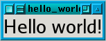
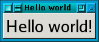
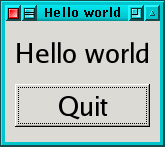
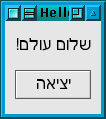
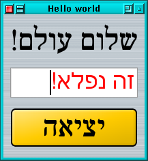
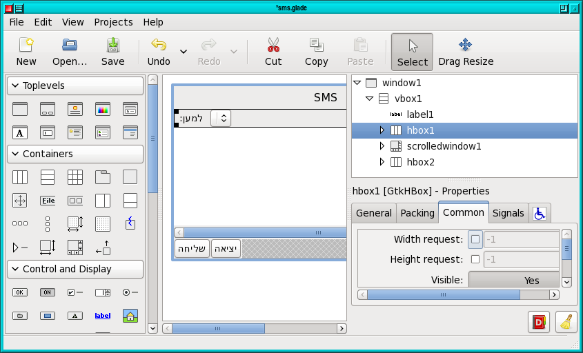
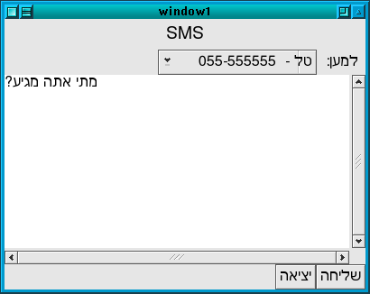
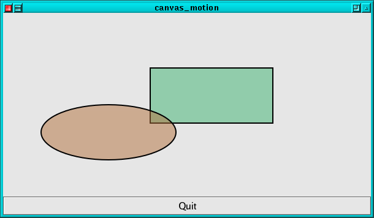

+
use Gtk2 '-init'; my $window = Gtk2::Window->new; my $label = Gtk2::Label->new("Hello world!"); $window->add($label); $window->show_all(); Gtk2->main;

use Gtk2 '-init'; my $window = Gtk2::Window->new; $window->set_title ("Hello world"); $window->signal_connect (destroy => sub { Gtk2->main_quit; }); my $button = Gtk2::Button->new("Hello world!"); $button->signal_connect(clicked=> sub { Gtk2->main_quit; }); $window->add($button); $window->show_all(); Gtk2->main;

use Gtk2 '-init'; package MyApp; use base 'Gtk2::Window'; sub new { my $self = bless Gtk2::Window->new(), shift(); $self->set_title ("Hello world"); $self->{button} = Gtk2::Button->new("Hello world!"); $self->{button}->signal_connect(clicked=> \&clicked, $self); $self->add($self->{button}); return $self; } sub clicked { my($widget, $self) = @_; $self->{button}->set_label("Bye!") } package main; my $app = new MyApp; $app->signal_connect (destroy => sub { Gtk2->main_quit; }); $app->show_all(); Gtk2->main;
#!/usr/bin/perl -w use strict; package Mup::ColorButton; use Gtk2; # this big hairy statement registers our Glib::Object-derived class # and sets up all the signals and properties for it. use Glib::Object::Subclass Gtk2::Button::, signals => { # with an empty hash for color_changed, we use all defaults, # which results in a signal which receives no extra parameters[2] # and returns no value. color_changed => {}, # by supplying a subroutine reference for an existing signal, # we override the default handler for the class; this is how # you override virtual functions on Glib::Objects. show => \&on_show, }, properties => [ Glib::ParamSpec->int ( 'red', # name 'Red', # nickname 'The Red component of the RGB color', #blurb 0, # min 0xffff, # max 0xffff, # default [qw/readable writable/] #flags ), Glib::ParamSpec->int ( 'green', 'Green', 'The Green component of the RGB color', 0, 0xffff, 0xffff, [qw/readable writable/] ), Glib::ParamSpec->int ( 'blue', 'Blue', 'The Blue component of the RGB color', 0, 0xffff, 0xffff, [qw/readable writable/] ), ] ; # as part of creating the C object, Glib will call the INIT_INSTANCE # method to, surprise, initialize the instance. this is not an inherited # method; it will be called with a fully-qualified package name. # most of what we used to have in the constructor goes here. # in fact, we just inherit new() from the base class, because it does # everything we need it to. sub INIT_INSTANCE { my $self = shift; $self->{red} = 0xffff; $self->{green} = 0xffff; $self->{blue} = 0xffff; my $frame = Gtk2::Frame->new; $frame->set_border_width (3); $frame->set_shadow_type ('etched-in'); $self->add ($frame); $frame->show; my $event_box = Gtk2::EventBox->new; $event_box->set_size_request (14, 14); $frame->add ($event_box); $event_box->show; $self->{colorbox} = $event_box; } # in a more ambitious widget, we'd probably define GET_PROPERTY # and SET_PROPERTY to do some custom stuff... for our purposes, # however, the default implementation provided by Glib::Object::Subclass # is sufficient. (it sets the property values as hash members in the # instance variable.) # here we need to override the show method to set the color the # first time we go onscreen, because we can't do that in the # initializer (the GdkWindow does not exist yet). sub on_show { my $self = shift; $self->set_color (red => $self->{red}, green => $self->{green}, blue => $self->{blue}); # perl code that needs to call the parent class usually does something # like $self->SUPER::methodname ---- however, class_closures for # for Glib::Objects are not inheritable in that way; the code to which # we need to chain may not even be perl code. Glib provides this # method to provide that functionality, instead. $self->signal_chain_from_overridden; } sub set_color { my $self = shift; my %params = @_; my $color = Gtk2::Gdk::Color->new ($params{red}, $params{green}, $params{blue}); $self->{colorbox}->get_colormap->alloc_color ($color, 0, 1); $self->{colorbox}->modify_bg ('normal', $color); $self->{colorbox}->modify_bg ('active', $color); $self->{colorbox}->modify_bg ('prelight', $color); $self->{red} = $params{red}; $self->{green} = $params{green}; $self->{blue} = $params{blue}; # emit the color-changed signal. note again that the signal # name treats - and _ as equivalent. $self->signal_emit ('color-changed'); } package main; use Gtk2 -init; my $window = Gtk2::Window->new; $window->set_title ('Color buttons'); $window->set_border_width (6); $window->signal_connect (delete_event => sub { Gtk2->main_quit; 1 }); my $vbox = Gtk2::VBox->new; $window->add ($vbox); $vbox->show; my $foo = Mup::ColorButton->new (red => 0xaaaa, green => 0x0, blue => 0xffff); $vbox->pack_start ($foo, 1, 1, 0); $foo->show; $foo->signal_connect (clicked => sub { my $self = shift; my $dialog = Gtk2::ColorSelectionDialog ->new('pick a color'); my $c = Gtk2::Gdk::Color->new ($self->{red}, $self->{green}, $self->{blue}); $self->{colorbox}->get_colormap->alloc_color($c, 0, 1); $dialog->colorsel->set_current_color ($c); if ('ok' eq $dialog->run) { my $c = $dialog->colorsel->get_current_color; $self->set_color (red => $c->red, green => $c->green, blue => $c->blue); } $dialog->destroy; }); $foo->signal_connect(color_changed => sub { warn "the color changed - now " . join (", ", $_[0]->get (qw/red green blue/)) . ". i should do something!"; }); $window->show; Gtk2->main;
using Gtk;
public class HelloWorld : Gtk.Window {
construct {
this.destroy += Gtk.main_quit;
this.title = "Hello World";
var button = new Button.with_label("Hello world");
button.clicked += btn => {
stdout.printf("Hello world!\n");
};
button.show();
this.add(button);
}
}
int main(string[] args) {
Gtk.init(ref args);
var hello_world = new HelloWorld();
hello_world.show();
Gtk.main();
return 0;
}
g_signal_connect()
key-press-event, button adds clicked
label, label-xalign, etc.
$widget->set(name=> value)
Gtk2::HBox and Gtk2::VBox
Gtk2::Table
Gtk2::Fixed
Gtk2::TreeView
Gtk2::Notebook
GtkScrolledWindow
Gtk::Paned
use Gtk2 '-init'; my $window = Gtk2::Window->new(); $window->set(title=>'Hello world'); $window->signal_connect (destroy => sub { Gtk2->main_quit; }); my $vbox = Gtk2::VBox->new(); $vbox->set("border_width"=> 10); $window->add($vbox); my $label = Gtk2::Label->new("Hello world"); $vbox->pack_start($label,0,0,5); # expand?, fill?, padding my $button = Gtk2::Widget->new("Gtk2::Button", label=>"Quit"); $button->signal_connect(clicked=>\&Gtk2::main_quit); $vbox->pack_start($button, 0,0,5); $window->show_all(); Gtk2->main;

#!/usr/bin/perl BEGIN { $ENV{LC_ALL} = "he_IL"; } use utf8; # Needed for Hebrew use Gtk2 '-init'; : my $label = Gtk2::Label->new("שלום עולם!"); $vbox->pack_start($label,0,0,5); # expand?, fill?, padding my $button = Gtk2::Widget->new("Gtk2::Button", label=>"יציאה"); # Note how additional parameters are passed in callback $button->signal_connect(clicked=>\&my_quit, [$label, $entry]); $vbox->pack_start($button, 0,0,5); $window->show_all(); Gtk2->main; sub my_quit { my ($self, $args) = @_; my ($label, $entry) = @$args; $label->set(label=>$entry->get_text()); $entry->set_text(""); # Add a timeout event Glib::Timeout->add(1500, sub { exit }); }

#!/usr/bin/perl BEGIN { $ENV{LC_ALL} = "he_IL"; } use utf8; # Needed for Hebrew use Gtk2 '-init'; Gtk2::Rc->parse_string(<<__); include "/usr/local/share/themes/Bumblebee/gtk-2.0/gtkrc" style "normal" { font_name ="serif 30" } style "my_entry" { font_name ="sans 25" text[NORMAL] = "#FF0000" } widget "*" style "normal" widget "*Entry*" style "my_entry" __ my $window = Gtk2::Window->new; $window->set_title ("Hello world"); $window->signal_connect (destroy => sub { Gtk2->main_quit; }); my $vbox = Gtk2::VBox->new(); $vbox->set("border_width"=> 10); $window->add($vbox); my $label = Gtk2::Label->new("שלום עולם!"); $vbox->pack_start($label,0,0,5); # expand?, fill?, padding my $entry = Gtk2::Entry->new(); $vbox->pack_start($entry,0,0,5); my $button = Gtk2::Widget->new("Gtk2::Button", label=>"יציאה"); $button->signal_connect(clicked=>\&my_quit); $vbox->pack_start($button, 0,0,5); $window->show_all(); Gtk2->main; sub my_quit { print "Lehitraot!\n"; exit; }

Gtk2::Rc->parse_string(<<__); style "big" { font_name ="serif 80" } style "normal" { font_name ="serif 30" } widget "*" style "normal" widget "*big*" style "big" __ : my $label = Gtk2::Label->new("Name:"); $label->set_name("big"); :
glade-3 sms.glade

#!/usr/bin/perl BEGIN { $ENV{LC_ALL} = "he_IL"; } use Gtk2 -init; use Gtk2::GladeXML; use strict; my $receiver; # Global variable for receiver my %db; sub read_db { open(DB, "<:utf8", "mysms.dat"); while(<DB>) { chomp; my($name, $number) = split(/,/); $db{$name} = $number; } close(DB); } # Autoconnect routines sub cb_quit { Gtk2->main_quit; } sub on_send_clicked { print "Sending sms to ", $db{$receiver}, "\n"; } # main read_db(); my $gladexml = Gtk2::GladeXML->new('sms.glade'); $gladexml->signal_autoconnect_from_package('main'); my $menu = $gladexml->get_widget('optionmenu1')->get_menu; for my $name (sort keys %db) { my $item = Gtk2::MenuItem->new("$name - " . $db{$name}); $item->signal_connect(activate => sub { $receiver = $name }); $item->show(); $menu->append($item); } Gtk2->main;

#!/usr/bin/perl use Gtk2 '-init'; use Gnome2::Canvas; my($w_top, $w_canvas); sub create_widgets { $w_top = Gtk2::Window->new; $w_top->signal_connect(destroy=> sub { exit }); my $vbox = Gtk2::VBox->new(0,0); $w_top->add($vbox); $w_canvas = Gnome2::Canvas->new_aa(); $vbox->pack_start($w_canvas, 1,1,0); $w_canvas->set_size_request(300,300); $w_canvas->set_scroll_region (0, 0, 300, 300); my $quit = Gtk2::Button->new("Quit"); $quit->signal_connect(clicked=> sub { exit }); $vbox->pack_start($quit, 0, 0, 0); $w_top->show_all(); } # Callback for moving items on the canvas my ($dragging, $last_x, $last_y); # item_move static data sub item_move { my($item, $event) = @_; if ($event->type eq "button-press") { $item->raise_to_top(); $last_x = $event->x; $last_y = $event->y; $dragging=1; } elsif ($event->type eq "motion-notify") { if ($dragging) { my $new_x = $event->x; my $new_y = $event->y; $item->move($new_x - $last_x,$new_y-$last_y); $last_x = $new_x; $last_y = $new_y; } } elsif ($event->type eq "button-release") { $dragging = 0; } } sub place_objects_on_canvas { my $root = $w_canvas->root(); for my $p ([50,50, "green"], [50,250, "orange"], [250,50, "yellow"], [250,250, "blue"]) { my($x,$y,$color) = @$p; # Put a circle on the graph my $item = Gnome2::Canvas::Item->new( $root, "Gnome2::Canvas::Ellipse", x1=> $x-16, y1=> $y-16, x2=> $x+16, y2=> $y+16, fill_color => $color, outline_color=>"black"); # Make it movable $item->signal_connect("event", \&item_move); } } create_widgets(); place_objects_on_canvas(); Gtk2->main();
#!/usr/bin/perl ############################################################ # Example of animation on the gnome canvas. # # Dov Grobgeld ############################################################ use Gtk2 '-init'; use Gnome2::Canvas; use strict; my($w_top, $w_canvas); my $min_x = 5; my $max_x = 500; my ($rect_green, $rect_orange); ############################################################ # Create the widgets ############################################################ sub create_widgets { $w_top = Gtk2::Window->new; $w_top->signal_connect(destroy=> sub { exit }); my $vbox = Gtk2::VBox->new(0,0); $w_top->add($vbox); $w_canvas = Gnome2::Canvas->new_aa(); $vbox->pack_start($w_canvas, 1,1,0); $w_canvas->set_size_request(600, 300); $w_canvas->set_scroll_region(0, 0, 600, 300); my $quit = Gtk2::Button->new("Quit"); $quit->signal_connect(clicked=> sub { exit }); $vbox->pack_start($quit, 0, 0, 0); $w_top->show_all(); } sub place_objects_on_canvas { my $root = $w_canvas->root(); $rect_green = Gnome2::Canvas::Item->new($root, "Gnome2::Canvas::Rect", x1=> 240, y1=> 90, x2=> 440, y2=> 180, fill_color_rgba=> 0x3cb37180, outline_color => "black", width_units =>2.0); # Add user data $rect_green->{dir}=1; $rect_green->{speed}=5; $rect_orange = Gnome2::Canvas::Item->new($root, "Gnome2::Canvas::Ellipse", x1=> 30, y1=> 150, x2=> 250, y2=> 240, fill_color_rgba=> 0xb3713c80, outline_color => "black", width_units =>2.0); $rect_orange->{dir} = -1; $rect_orange->{speed} = 8; Glib::Timeout->add(10, \&cb_animation_step); } ############################################################ # Takes one step of the animation. rect_green is moved by # DELTA_Y_GREEN and rect_orange by DELTA_Y_ORANGE. When they # meet the borders, their direction change ############################################################ sub cb_animation_step { foreach my $r ($rect_green, $rect_orange) { # Get old values my ($old_x1, $old_x2) = $r->get("x1", "x2"); # Get user data my $dir = $r->{dir} || 1; my $speed = $r->{speed}; # Move the object my $new_x1 = $old_x1 + $dir * $speed; my $new_x2 = $old_x2 + $dir * $speed; # Check if we hit a wall if ($new_x1 < $min_x || $new_x2 > $max_x) { $dir = -$dir; $r->{dir} = $dir; $new_x1 = $old_x1 + $dir * $speed; $new_x2 = $old_x2 + $dir * $speed; } # Update new parameter data $r->set(x1 => $new_x1, x2 => $new_x2); } # As long as this routine returns TRUE, it will be # called again return 1; } create_widgets(); place_objects_on_canvas(); Gtk2->main();
